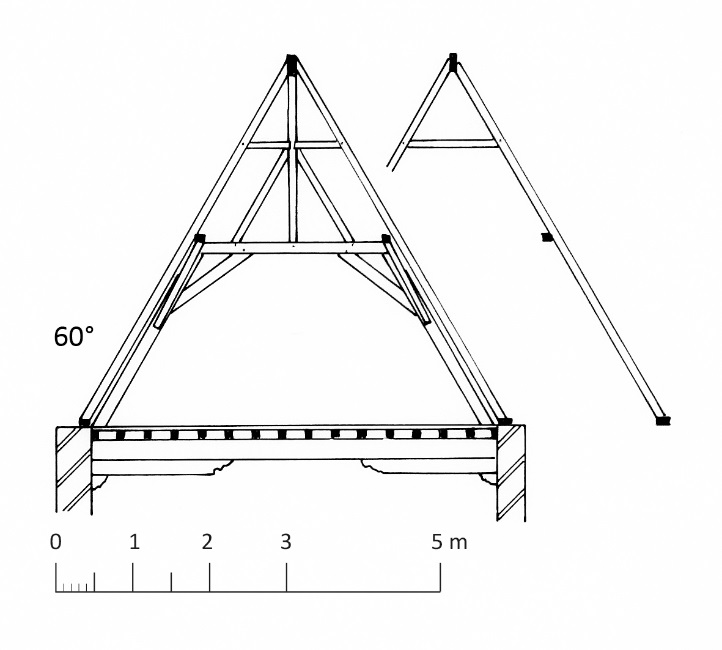
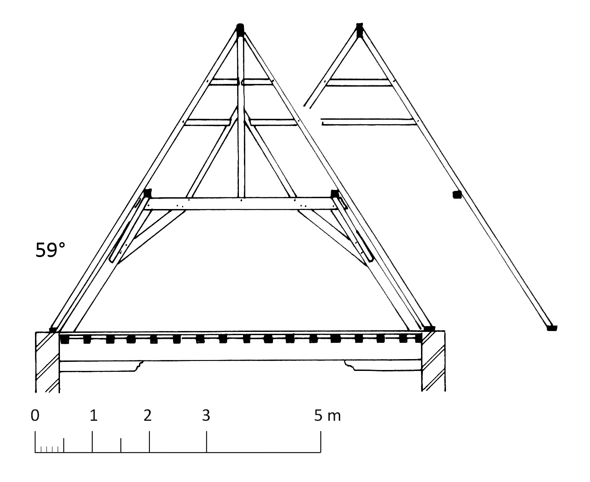
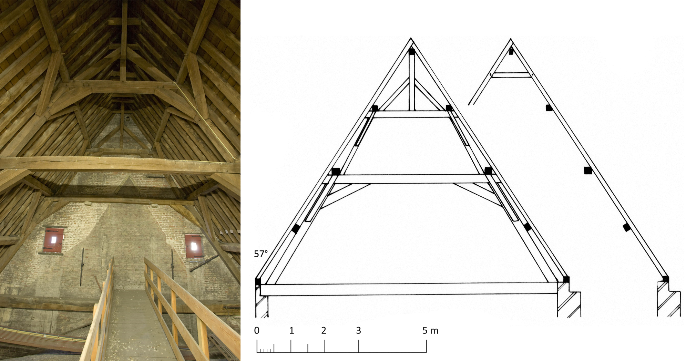
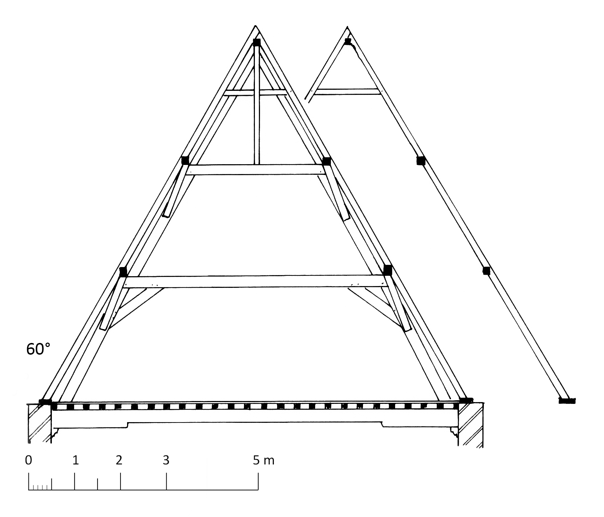

11 Gordingenkappen
11.1 Gordingenkappen op gestapelde schaargebinten
11.1.1 Stadhuis van Damme
De kap van het stadhuis van Damme bestaat uit acht getelmerkte gespannen van telkens drie gestapelde schaargebinten1. Een nokgording – met centrale, geschoorde stijl die een nokbalk ondersteunt – ontbreekt echter. Op de dekbalken van de schaargebinten rusten de flieringen. Tussen de kromstijlen van de schaargebinten zijn gordingen aangebracht. Tussen de gordingen en de flieringen bevinden zich vervolgens de kepers van de dakkap. De flieringen worden bijkomend gesteund door kruisende schoren die steunen op de gordingen. In het verlengde van deze schoren bevinden zich, onder de gordingen en tegen de kromstijlen van de schaargebinten, kleine windschoren. In totaal zijn er aan beide zijden van de kap drie rijen van dergelijke Sint-Andreaskruisen, behalve aan de straatzijde, waar de onderste rij werd verwijderd tijdens de restauratie van het stadhuis in 1859-1869. De bovenste kepers zijn nabij de nok verbonden met een hanenbalk die in de gespannen op het bovenste flieringenpaar ligt.
De kap op het traptorentje tegen de achtergevel van het stadhuis bestaat uit sporen op een klein schaargebint met flieringen op windschoren. De sporen worden verbonden door een hanenbalk die rust op de flieringen.
De bouw van het stadhuis is goed gedocumenteerd dankzij de bewaard gebleven bouwrekeningen2. In 1461 besliste het stadsbestuur van Damme om een nieuw stadhuis te laten bouwen. De werken, naar een ontwerp van de Brusselse aannemer Godevaert de Bosschere en Jan van Herne, timmerman uit Sluis, werden aanbesteed in 1463. Het volgende jaar werd het oude stadhuis afgebroken en begon de bouw van het nieuwe stadhuis. In 1467 was het stadhuis grotendeels voltooid. Het bouwhout werd hoofdzakelijk aangekocht in Sluis en was aangevoerd uit Amsterdam.
11.2 Gordingenkappen met nokgebinten op enkele schaargebinten
11.2.1 Braambergstraat 10, noordvleugel
Het breedhuis op de hoek van de Braambergstraat en de Jozef Suvéestraat maakte deel uit van een groter geheel dat duidelijk herkenbaar is op het stadszicht van Marcus Gerards uit 15623 (zie ook: 8.1.9, Jozef Suvéestraat 2). Het huis was toen eigendom van Charles de Benecourt, heer van Lattiloye. De noordvleugel is een woongedeelte van 14,6 m lang en 5,3 m breed. Een brandmuur verdeelt de vleugel in een groot rechthoekig deel en een kleiner, bijna vierkant deel. Deze indeling is echter niet doorgetrokken op de zolder.
De dakkap rust op drie spanten die op de brandmuur en moerbalken staan opgesteld. Elk spant bestaat uit een schaargebint en een nokgebint. Er zijn geen spanten tegen de eindgevels. De kepers hebben een doorsnede van 8 x 8 cm en staan hart op hart 30 tot 35 cm uiteen. Aan de zuidkant zijn nagenoeg alle kepers behouden. De kepers aan de noordkant werden ingekort toen in de 19de eeuw de straatgevel werd verhoogd.

Alle verbindingen van de schaargebinten zijn van het pen-en-gat type, behalve de onderaan opgenagelde schoren. De verbindingen in de nokgebinten zijn eveneens van het pen-en-gat type. De nokgebinten zijn eveneens met een pen-en-gat verbinding bevestigd aan de onderliggende schaargebinten. De langse schoren naar de nokbalk zijn onderaan opgenageld. De twee bewaarde hanenbalken zijn met pen-en-gat verbindingen in de kepers geborgen. De verbinding tussen de nokstijlen en de gehalveerde hanenbalken is halfhouts.

De gekapte telmerken op de gebinten zijn aangebracht van oost naar west. De noordelijke telmerken zijn voorzien van een bijkomend streepje.
11.2.2 Braambergstraat 10, oostvleugel
De oostvleugel langs de Jozef Suvéestraat vormt de verbinding tussen het woongedeelte in de Braambergstraat en het grotere woonhuis Jozef Suvéestraat 2. De vleugel bestaat uit twee delen: een zuidelijk volume van 4,45 x 6,4 m binnenwerks en een ongeveer 16,5 m lange verbindingsvleugel. De dakkap van de oostvleugel is echter een doorlopend geheel, vandaag verdeeld over twee eigendommen.
Het deel van de dakkap in Braambergstraat telt zes spanten, opgebouwd uit schaar- en nokgebinten. Alleen de spanten I en II boven de meest noordelijke travee zijn nagenoeg volledig bewaard. Boven de andere traveeën werd het westelijk dakvlak verbouwd tijdens de verhoging van de westelijke binnengevel. Hierbij verdwenen de spantbenen, de korbelen en alle hanenbalken.
Constructief is de kap identiek aan de kap boven de noordvleugel. Belangrijk verschil echter is dat elk keperpaar hier twee in plaats een hanenbalk bevat. Ter hoogte van de spanten zijn de bovenste gehalveerde hanenbalken halfhouts verbonden met de nokstijl. De onderste hanenbalken van de spanten zijn verbonden met de nokstijlschoren.
De kap werd gelijktijdig opgetrokken met de kap van de noordvleugel. De telmerken op de nokgebinten vertonen een coherente volgorde van noord naar zuid. Dit is echter niet het geval bij de schaargebinten waarvan ook de afwerking en de houtkwaliteit merkbaar verschillend is van de andere onderdelen in de kap. Wellicht zijn de schaargebinten afkomstig uit een oudere sporenkap.

De balksleutels van de moerbalken onder de schaargebinten kunnen worden gedateerd in de late 16de eeuw tot de eerste helft van de 17de eeuw.
11.2.3 Predikherenstraat 31
Het achterhuis van het 18de-eeuwse herenhuis is merkelijk ouder4. Het was oorspronkelijk een vrijstaand gebouw (5,5 m diep en 6 m breed) dat nadien werd opgenomen in een groter geheel. De gaaf bewaarde kapconstructie rust op twee schaargebinten en stijlgebinten tegen de eindgevels. Op de schaar- en stijlgebinten staan vier nokgebinten met geschoorde nokstijlen. De telmerken van de gebinten hebben rechts een bijkomend teken. De 18 sporenparen bevatten elk één hanenbalk. De telmerken op de hanenbalken verlopen van voorgevel naar achtergevel. De eikenhouten onderdelen zijn bijzonder verzorgd afgewerkt. Alle verbindingen zijn van het pen-en-gat-type.
De dakhelling bedraagt 56°.
11.2.4 Sint-Jansplein 12
De licht uitgevoerde kap van het woonhuis telt twee spanten, opgebouwd uit schaargebinten en nokgebinten met geschoorde nokstijlen5. Nagenoeg alle verbindingen zijn opgenageld. Vlakbij de nok zijn een tiental kleine, halfhouts opgenagelde hanenbalkjes bewaard. Er staan geen spanten tegen de gevels.
De gebinten en kepers bestaan grotendeels uit hergebruikte onderdelen. Deze zijn afkomstig uit een sporenkap met twee halfhouts verbonden hanenbalken per sporenpaar. Sommige getrokken telmerken zijn voorzien van een bijteken.
Het bovendeel van de straatgevel werd wellicht in de 17de eeuw opgetrokken ter vervanging van een houten gevel. De huidige kap behoort mogelijk tot deze verbouwing.
11.3 Gordingenkappen met nokgebinten op gestapelde schaargebinten.
11.3.1 Landhuis van het Brugse Vrije, vierschaar, schepenkamer en vertrekkamer
In het begin van de 16de eeuw liet het kasselrijbestuur van het Brugse Vrije een nieuwe schepenkamer, vierschaar en vertrekkamer bouwen tussen de Reie en de gebouwen uit 1434-14406. De kappen van deze 16de-eeuwse uitbreiding bestaan uit spanten met twee gestapelde schaargebinten en nokgebinten met geschoorde nokstijlen. De flieringen liggen telkens op de dekbalken van de gebinten. Bijkomende gordingen bevinden zich halverwege de gebintpoten. Alle verbindingen zijn van het pen-en-gattype. Elk sporenpaar is voorzien van een hanenbalk dichtbij de nok.
Schepenkamer (1520-1523)
De kap telt vijf spanten waarvan twee tegen de eindgevels. De kepers hebben een doorsnede van 12 x 12 cm en liggen hart op hart gemiddeld 25 tot 30 cm uiteen. De telmerken op de gebinten zijn aangebracht van zuid naar noord aangebracht met een bijteken aan de westkant.
Vertrekkamer (1520-1523)
De kap telt vijf spanten waarvan twee tegen de eindgevels. De kepers hebben een doorsnede van 12 x 12 cm en liggen hart op hart gemiddeld 30 cm uiteen. De telmerken op de gebinten zijn aangebracht van noord naar zuid aangebracht met een bijteken aan de westkant.
Vierschaar (1523-1524)
De kap telt acht spanten waarvan een tegen de oostgevel is geplaatst. De kepers hebben een doorsnede van 9 x 10 cm en liggen hart op hart gemiddeld 35 cm uiteen. De telmerken tellen van oost naar west op van II tot VII, telkens met een bijteken aan de zuidkant. De twee meest westelijke spanten zijn zonder telmerken.
11.3.2 Vlamingstraat 2
In dit pand is een gordingenkap met schaar- en nokgebinten bewaard gebleven. Het oorspronkelijke diephuis werd waarschijnlijk reeds in de 17de eeuw opgedeeld.
11.3.3 Onze-Lieve-Vrouwekerk, oostelijk deel van de zuidelijke zijbeuk
De jongste van de dakkappen in de Onze-Lieve-Vrouwekerk rust op zes gestapelde schaargebinten en nokgebinten die, net zoals de kepers, in opvallend mooi gekantrecht hout zijn uitgevoerd7. De schaarbenen zijn telkens met een pen-en-gatverbinding en een toognagel in de onderliggende balken vastgezet. Halverwege de schaarbenen van de onderste schaargebinten zorgt een gording voor een bijkomende verstijving van de constructie. De nokgebinten bestaan uit een nokstijl, in de dwarse richting met schoren naar de dekbalken van de bovenste schaargebinten, in de langse richting met schoren naar de nokgording. Dichtbij de nok zijn kleine hanenbalkjes ingebracht. Alle verbindingen zijn van het pen-en-gat-type en met één of twee houten toognagels vastgezet.
De dakhelling bedraagt 57°.

Het oostelijke deel van de zuidelijke zijbeuk is nog niet afgebeeld op de stadskaart van Marcus Gerards uit 1562, zodat deze kap ten vroegste in de tweede helft van de 16de eeuw kan gedateerd worden.
11.3.4 Ezelstraat 2
Aan het begin van de Ezelstraat, langs de Pottenmakersrei, bevindt zich een huis waarvan de oudste delen wellicht opklimmen tot de 16de eeuw8. Aan straatzijde staat een klein diephuis, daarachter een dwarsvleugel die in de 17de of 18de eeuw werd verbouwd bij de aanbouw van een derde bouwvolume met een korfboogpoort. De achterste volumes worden overdekt door gordingenkappen met schaar- en nokgebinten.
De oudere dakkap van het voorhuis is een constructie met nok- en hanenbalken. Tegen de achtergevel staan gestapelde stijlgebinten en een nokgebinte. De overige drie spanten bestaan uit gestapelde schaargebinten en nokgebinten met geschoorde nokstijlen. Er is geen spant tegen de voorgevel; de gordingen rusten er op balksleutels. Alle verbindingen in het gebinte zijn van het pen-en-gat-type, behalve de opgenagelde onderzijden van de windschoren. De telmerken bestaan aan de ene zijde uit getrokken strepen, aan de overzijde uit gaatjes die met een guts zijn aangebracht. De telmerken zijn van achter- naar voorgevel aangebracht.
De keperparen zijn elk voorzien van een halfhouts verbonden hanenbalk. De getrokken telmerken op de kepers en de hanenbalken bevinden zich niet in de juiste volgorde. Er zijn twee types van kepers in de kap: eikenhouten kepers met een vierkante sectie en ronde kepers in naaldhout. Wellicht zijn de eikenhouten kepers afkomstig uit een oudere kapconstructie. In het eerste vak van de dakkap aan straatzijde bevinden zich een aantal vernieuwde kepers.
Het huis staat met een bakstenen gevel afgebeeld op de kaart van Marcus Gerards (1562).
11.3.5 Sint-Janshospitaal, zusterklooster, oostvleugel
De oostvleugel is het oudste deel van het zusterklooster, gebouwd in 1539-15409. In de oostelijke helft van de kap werden in 1806 meidenkamers en opslagruimtes ingericht, terwijl de westelijke helft als zolderruimte behouden bleef.
De sporen hebben een doorsnede van gemiddeld 11 x 11 cm en staan hart op hart gemiddeld 30 cm uiteen. Het onderste gedeelte van de sporen is op de onderste fliering genageld. Elk sporenpaar telt een kleine hanenbalk dichtbij de nok. De kap telt negen spanten, opgebouwd uit dubbele gebinten en geschoorde nokstijlgebinten. Van west naar oost bevat de dakkap twee dubbele stijlgebinten, zes dubbele schaargebinten en een dubbel stijlgebint tegen de oostgevel. Het stijlgebint tegen de westgevel heeft een bijkomende schoor tegen de buitenkant van de stijlen van het onderste gebint. Halverwege de onderste schaarbenen is een gording aangebracht. De telmerken op de gebinten zijn aangebracht van oost naar west.

Uit bouwsporen op de zolder is duidelijk dat de oorspronkelijke gevels en ook de kap oorspronkelijk lager waren. Deze toestand is nog zichtbaar op het stadsplan van Marcus Gerards uit 1562. De bestaande toestand met een hogere kap op de oostvleugel van het zusterklooster is reeds zichtbaar op het panoramisch stadsplan van Sanderus uit 1641. De verbouwing van de oostvleugel en de oprichting van de kapconstructie moet bijgevolg gesitueerd worden omstreeks 1600.
11.3.6 Steenstraat 40, ambachtshuis van de schoenmakers
De eikenhouten kap van het in 1527-1528 gebouwde ambachtshuis werd vermoedelijk gebouwd onder leiding van meester-timmerman B. de Hane10. Elk spant bestaat uit twee gestapelde gebinten en een nokgebinte met geschoorde nokstijl. Tegen de eindgevels staan stijlgebinten opgesteld, in de zolderruimte vier schaargebinten. Elk sporenpaar is voorzien van een hanenbalk. Alle verbindingen zijn van het pen-en-gat type.
Devliegher 1971, 49, fig. 14, fig. 17.↩︎
Devliegher 1965b.↩︎
Braambergstraat 10 in de inventaris van het bouwkundig erfgoed: https://inventaris.onroerenderfgoed.be/erfgoedobjecten/81835.↩︎
Predikherenstraat 31 in de inventaris van het bouwkundig erfgoed: https://inventaris.onroerenderfgoed.be/erfgoedobjecten/82141.↩︎
Sint-Jansplein 12 in de inventaris van het bouwkundig erfgoed: https://inventaris.onroerenderfgoed.be/erfgoedobjecten/29694.↩︎
Janse & Devliegher 1962, 369-370; Devliegher 1987, 18-24. Het landhuis van het Brugse Vrije in de inventaris van het bouwkundig erfgoed: https://inventaris.onroerenderfgoed.be/erfgoedobjecten/29236.↩︎
Van Eenhooge 2009, 42. De Onze-Lieve-Vrouwekerk in de inventaris van het bouwkundig erfgoed: https://inventaris.onroerenderfgoed.be/erfgoedobjecten/82359.↩︎
Ezelstraat 2 in de inventaris van het bouwkundig erfgoed: https://inventaris.onroerenderfgoed.be/erfgoedobjecten/82559.↩︎
Gilté & Vanwalleghem 2004a, 352. Het zusterklooster in de inventaris van het bouwkundig erfgoed: https://inventaris.onroerenderfgoed.be/erfgoedobjecten/82412.↩︎
Idem 1999, 393-394. Het ambachtshuis van de schoenmakers in de inventaris van het bouwkundig erfgoed: https://inventaris.onroerenderfgoed.be/erfgoedobjecten/29813.↩︎